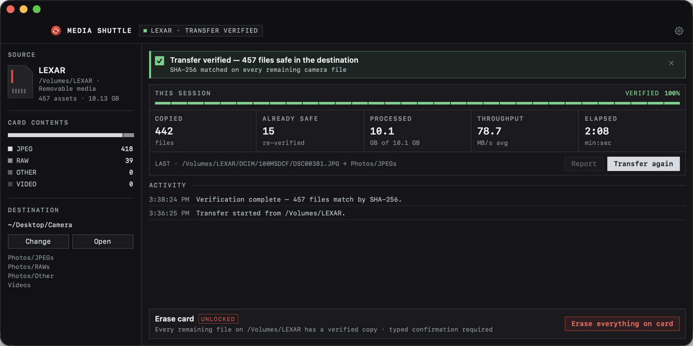

SHA-256 on every file
Card and destination are hashed separately. Nothing is called safe on the strength of a file size.
FREE · OPEN SOURCE · MIT
Media Shuttle pulls photos and videos off your camera card, sorts them into a predictable folder layout, and checks every file with SHA-256 before it calls the job done. Erase stays locked until the card and the copies still match.
macOS 14+ · signed and notarized by Apple · Windows 10/11 · Linux GTK 3

HOW IT WORKS
Media Shuttle finds camera media in DCIM, M4ROOT and PRIVATE and sorts it into
Photos/JPEGs, Photos/RAWs, Photos/Other and Videos, optionally by date.
It can start on its own the moment a card mounts.
Each file is written to a temporary name, the card copy and the destination copy are hashed independently, and it is published only when they match. Files already at the destination are re-verified and reused, never duplicated.
Erase unlocks only after a verified transfer. Before deleting anything, the card is rescanned and every file is
checked against its copy again. Unknown files keep erase locked, and you type ERASE EVERYTHING to confirm.
NEW IN 0.2 · MAC
One click — or automatically after every transfer — sends the verified copies to your Photos library, and iCloud Photos takes them to your iPhone, iPad and every other Mac.
FEATURES
Card and destination are hashed separately. Nothing is called safe on the strength of a file size.
Card status, live progress, recent activity, eject and the automation switches, without opening a window.
Watches for cards in the background, transfers automatically if you want it to, and notifies you when it’s done — or when it couldn’t be.
ARW, CR3, NEF, RAF, DNG, ORF, RW2 and dozens more RAW formats, HEIF, plus MP4, MOV, MXF, BRAW, R3D and AVCHD video.
Identical files already at the destination are reused. Different files with the same name are kept side by side.
No accounts, no analytics, no network requests. Settings, logs and transfer reports stay on your computer.
DOWNLOAD
Universal DMG for Apple silicon and Intel. macOS 14 or later. Signed and notarized, so it opens like any other app.
Download DMGInstaller or portable ZIP for Windows 10 and 11, x64. Self-contained — no .NET install needed.
Download installerA native GTK 3 app. Build from source and install for your user with one script — no root needed.
Build instructionsEvery release ships SHA-256 checksums. All releases